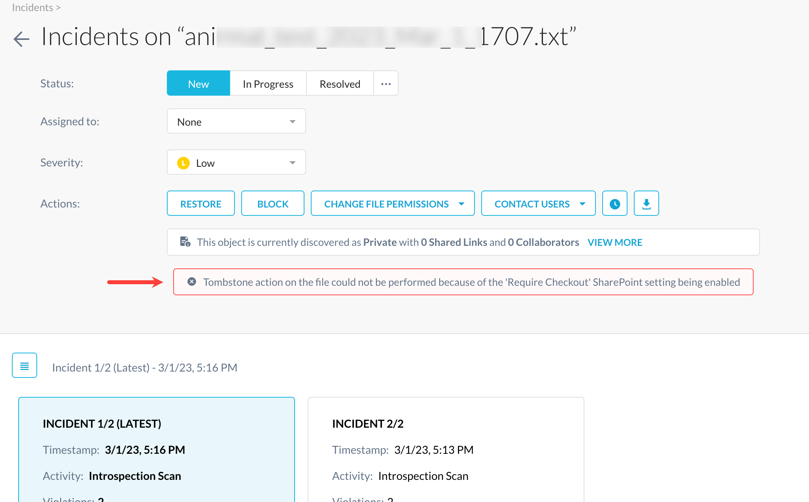
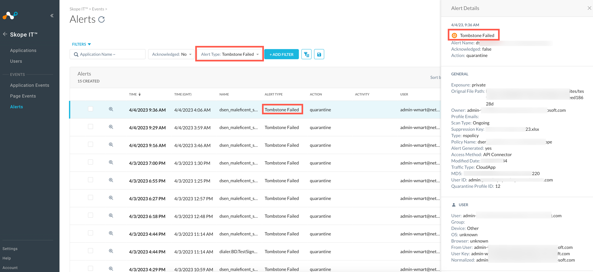
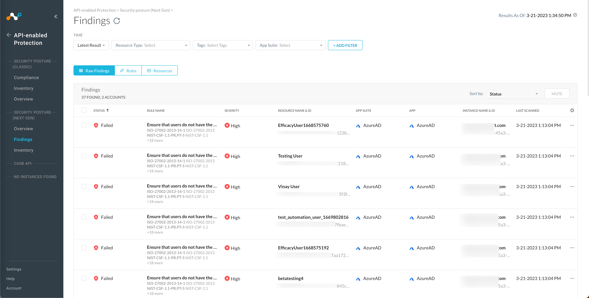
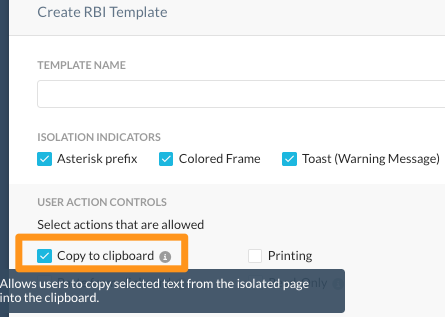
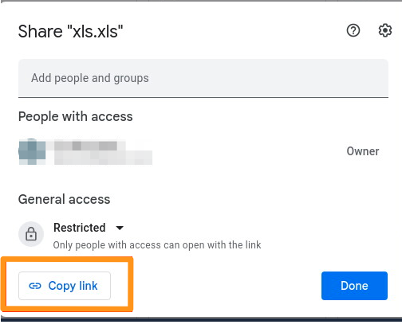

New Features And Enhancements In Release 104.0.0
Here is the list of the new features and enhancements.
Deprecation of Salesforce BYOK Feature
Salesforce Key Management is a feature that allows customers to use Salesforce's Bring Your Own Key (BYOK) feature to encrypt Salesforce data at rest. Netskope today provides customers the option of rotating/managing these keys from the Netskope console. Note that this feature is now deprecated, which means Netskope will not support this capability in any new commercial or federal Netskope DC.
Note that deprecation of this feature only means that you cannot rotate/manage the encryption keys from Netskope. You can continue using the BYOK feature within Salesforce without impacting Netskope’s API Data Protection for Salesforce.
Fine prints as follows:
For new Salesforce app instances, the UI will not have a BYOK checkbox. New instances cannot enable BYOK.
For existing Salesforce app instances that have not enabled BYOK, cannot enable it going forward.
Existing Salesforce app instances that are using BYOK, can disable BYOK. However, once disabled, you cannot re-enable it.
Salesforce Key Management page under Salesforce API-enabled Protection dashboard will not be available for tenants who have not enabled BYOK.
For existing Salesforce app instances that have enabled BYOK, the feature will continue to work as expected.
New Alert Type on Skope IT
In Microsoft Office 365 SharePoint, there is an option to require check out of files before editing. If this setting is enabled on a SharePoint site, Netskope API Data Protection can quarantine the file but fails to overwrite the original file with a tombstone file. To gracefully handle this kind of a scenario, API Data Protection now provides administrators to identify such files within Incidents and Alerts UI pages. Following two changes are added in the Netskope tenant UI:
Under Incidents > DLP, when you click an incident, the UI displays a new tombstone failure message.
 Under Skope IT > EVENTS > Alerts, a new alert type Tombstone Failed is introduced for a quarantine action.

Dropbox Paper Activity
Enhanced the Dropbox connector to add support (activity coverage) for Dropbox paper module.
Note
Activity name for Preview of any file in Dropbox Paper, has been updated from View to Preview.
Vanity RaaS Support For Azure AD And Google Identity Provider
When accessing Office365 from an unmanaged device, users are required to perform additional authentications via RaaS(Reverse proxy as a service). Release 104 introduces vanity URLS that provide access to supported Office365 apps via single authentication and also allowing DLP / TSS controls on post operations. The vanity URL feature is supported only for the myapps.microsoft.com domain.
Note
This is a controlled General Availability feature handled through API (back-end). Contact your Netskope sales representative/support to enable this on your tenant.
Implement macOS Agent
Endpoint DLP now supports macOS. The macOS Endpoint DLP agent is installed with STAgent that supports macOS Big Sur (11), Monterey (12), and Ventura (13) versions along with support for content control and device control policies.
Printer Device Control
Endpoint DLP Printer Device Control is now available. Policies can be created to restrict or allow printer access based on attributes of the printer or connection.
Note
This is a controlled General Availability feature. Contact your Netskope sales representative or support to enable this on your tenant.
Endpoint Policy Features
Endpoint DLP Windows-only features are now labeled as such in the UI.
Offline Event Column Deprecation
The Offline Event column was removed from the Endpoint Events. This column was not intuitively named and could cause confusion.
Windows Installation Package Update
Added a new executable file to Endpoint DLP called epdlp_diag.exe. It is installed in C:\Program Files\Netskope\EPDLP which can be used to return Endpoint DLP running state.
Renamed Compliance Page to Findings
Starting this release, the Compliance page under API-enabled Protection > Security Posture (Next Gen) is now renamed to Findings. To learn more: View Security Posture Findings.
|  |
Workday GA Announcement
Starting this release, Next Generation SSPM for Workday is now declared General Availability (GA). Next Generation SSPM for Workday now supports new set of rules and entities.
To learn more: Next Generation SaaS Security Posture Management for Workday.
Transaction Event Format 3
Improved data generation for the following Transaction Event Format 3 fields:
x-sc-notification-name
x-c-local-time
x-cs-app-activity
x-cs-app-object-type
x-cs-app-object-name
x-cs-app-object-id
x-rs-file-type
x-rs-file-category
x-cs-app-category
x-cs-app-suite
SSL Decryption Policies
In the SSL Decryption policy, if an app that shares a common domain with another app is selected, the admin is notified with a pop-up. If the admin clicks Proceed, then the other apps with the same domain are also selected. If the admin clicks Cancel, the apps are removed from the SSL Decryption policy. For Categories and App Suites with apps that have common domains, users are warned with a pop-up.
Disabled Longest Prefix Match For Custom URL Lookup
In SWG, we can now disable longest prefix match when matching incoming URLs against URL lists. Incoming URLs can now match against all URL lists with a positive match criteria. This is different from the current behavior of matching with the URL list with the longest prefix match.
Important
Before disabling the longest prefix match behavior, Netskope recommends reviewing your policies thoroughly as this is a fundamental change to how Netskope processes your policies in SWG.
Note
This is a Controlled General Availability feature. Contact your Netskope sales representative or support to enable this feature for your tenant.
Clipboard Operation Update
Enhanced the user experience for clipboard operations in isolation. Managed the clipboard operations performed by any button present on the isolated webpage in the RBI session, and also the browser’s menu.
Prior to this enhancement, RBI supported clipboard operations were triggered by keyboard shortcuts and the RBI context menu. With this enhancement, all clipboard operations are now intercepted and handled by RBI regardless of how the user initiates the action.
|  |
|  |
Heuristics and Sandbox Detection
On the Malware page, Netskope displays a Not detected message for advanced threat engines when they don't trigger detection alerts.
To learn more: About Malware.
Windows Installer Events And Event Details
Introduced new Installer Events and corresponding event details. You can see these events in Settings > Security Cloud Platform > Netskope Client > Devices. Refer to the following table to understand the new events and their details:
Event | Event Details |
|---|---|
Installed | Installed client version 'x' |
Uninstalled | Uninstalled client version 'x' |
Installation Failure | Failed to install client version 'x' - <reasons for failures> |
Uninstallation Failure | Failed to uninstall client version 'x' - <reasons for failures> |
Upgraded | Upgraded from client version ‘x' to 'y’ |
Upgrade Failure | Failed to upgrade from ‘x' to 'y’ - <reason for failures> |
Rollback Success | Rolled back to client version 'x' |
Rollback Failure | Failed to rollback to client version 'x' |
To learn more: Netskope Client For Windows.
Device Status Page Improvements
Modified the Devices page to show the following the device details in a more granular and detailed way:
Rebranded "Client Status" to “Internet Security Status”.
Device serial number is shown on Devices page.
Two NPA events Tunnel Down and Tunnel Up are introduced.
For client version till 103, the "Service" and "New Status" is empty in Event History page of a device.
Added new Internet Security status like "Errored" and "Backed off".
Added Last Event Service column for every event, this signifies the service which generates the event.
Added Info last updated field which shows the time when host info was updated.
Added new filters like Has Error to list errored devices.
The old NPA status is mapped to new NPA status as mentioned below:
Old Status | New Status |
|---|---|
Disconnected | Disabled |
Disabled | Disabled |
Steering Disabled | Disabled |
Allowed | Disabled |
Connected | Enabled |
To learn more: Devices.
Protect Client Configuration And Resources
Netskope Client introduces a new tamperproof capability to protect Netskope processes, folders, files, and registry keys from renaming, modification, or deletion.
In conjunction with this feature, when password protection feature is enabled, it stops the users from uninstalling or stopping the Netskope Client service. You can enable this feature in the Tamperproof tab in Client Configurations under Settings > Security Cloud Platform > Netskope Client > Devices and is available for Windows 10 or higher versions.
Note
Note: This option was earlier known as Self-Protection and was controlled using a feature flag.
To learn more, view Netskope Client Configuration.
Devices: Revised and detailed content to align with the options available on the Devices user interface.